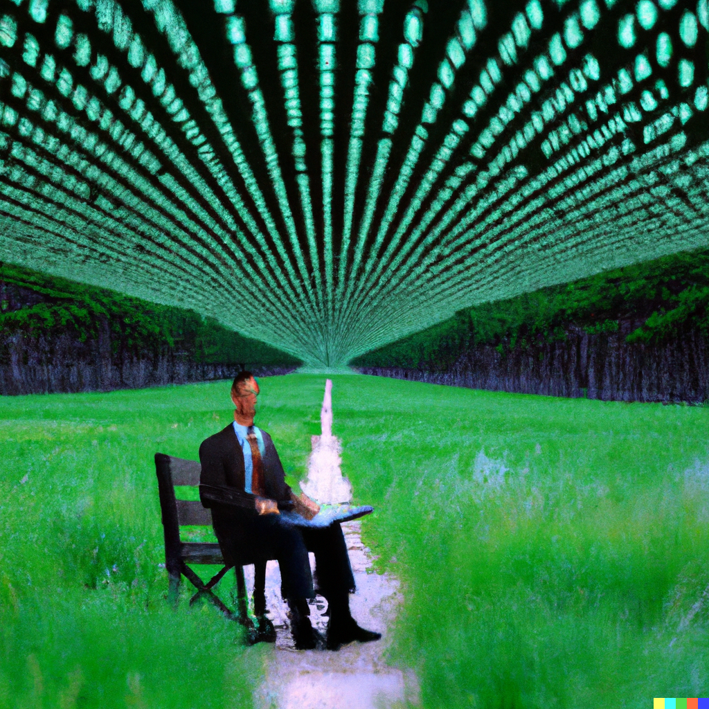
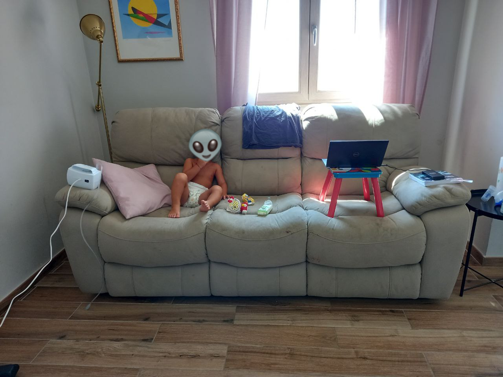

frabot
About
Notes and ideas (in many cases, incomplete or broken)
Paper Berrar 2024
A Data- and Knowledge-Driven Framework for Developing Machine Learning Models to Predict Soccer Match Outcomes.
Sep 19, 2024
Francesco Bottoni
Finding the Average Odds Margin
How to Mange Odds Margin.
Aug 18, 2023
Francesco Bottoni
Be Like a Circus Performer
Embrace the Circus Performer Mentality.
Aug 12, 2023
Francesco Bottoni
Goal n. 8 - Read 12 books
Updates on Goal n.8 - Reading 12 books.
Jan 24, 2023
Francesco Bottoni
2023 Goals
My 20 tasks to achieve in 2023.
Dec 28, 2022
Francesco Bottoni
Quote from Karpathy
All Fallen Empires begin the game in Sleeping status. Despite their complete development and immense power, the Fallen Empires will remain passive, staying within their borders and taking no action unless provoked.
Dec 13, 2022
Francesco Bottoni
Quote from Bottoni
Don’t be afraid to build.
Dec 13, 2022
Francesco Bottoni
Neural Network
Wikibot Neural Network.
Dec 12, 2022
Francesco Bottoni
Quote from Ilya Sutskever
Deep learning is based on the audacious conjecture that biological neurons and artificial neurons are not that different. Its success to date is evidence for this belief.
Dec 2, 2022
Francesco Bottoni
The Random Forest Guy
Aluminium Scrap Box Classification.
Nov 17, 2022
Francesco Bottoni
Confusion Matrix
Wikibot Confusion Matrix.
Nov 15, 2022
Francesco Bottoni

How Random Forest Can Empower A Plant
Practical use case of Random Forest in Industrial environment.
Oct 26, 2022
Francesco Bottoni

Learning AI And Failing Miserably
A minimal guide of failing learning AI.
Aug 7, 2022
Francesco Bottoni
No matching items